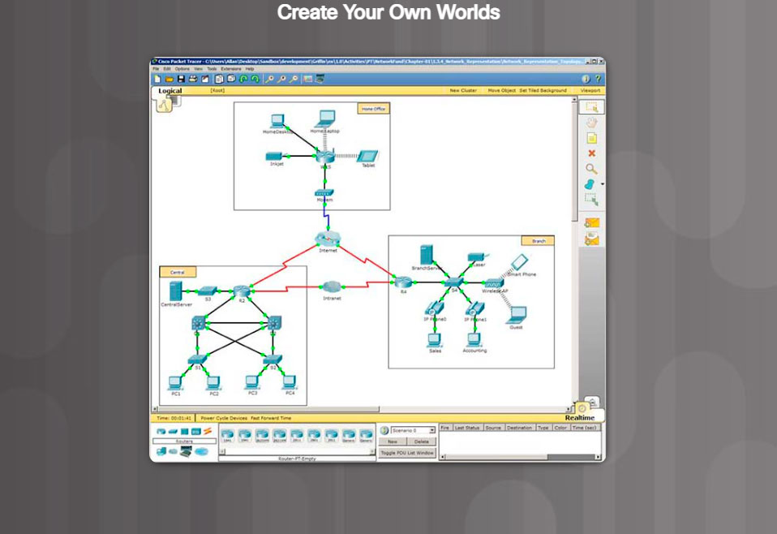

You can also use Packet Tracer to create your own experiments and networking scenarios. We hope that, over time, you consider using Packet Tracer - not only for experiencing the pre-built activities, but also to become an author, explorer, and experimenter.
The online course materials have embedded Packet Tracer activities that will launch on computers running Windows® operating systems, if Packet Tracer is installed. This integration may also work on other operating systems using Windows emulation.
